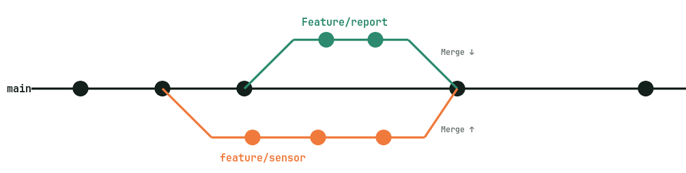

Why bother with Git?
Group projects fail in predictable ways. One person keeps the "real" copy. Someone edits the wrong version. A file gets overwritten the night before submission. Nobody can reconstruct who broke what, or why. Git exists to make all of that impossible... or at least, fixable.
Git gives your team four things that spreadsheets, Dropbox, and Discord attachments cannot:
- A real history. Every change is a labelled save-point. You can see what changed, who changed it, when, and why.
- Safe parallel work. Two people can edit the same file at the same time without overwriting each other. Their changes get merged, not clobbered.
- An undo button that actually works. Broke everything? Roll back to yesterday. Need a file from three weeks ago? It's there.
- A portfolio. The moment you graduate and apply for work, recruiters will look at your GitHub. Your coursework becomes evidence.
Git vs. GitHub: these are not the same thing.
People say "Git" and "GitHub" interchangeably. They're different tools with overlapping names, and confusing them is easy until you understand.
A program that runs on your computer. It tracks changes to files inside a folder. It works without internet. It has nothing to do with any website.
A website where you can store Git repositories so other people can access them. It adds discussion, review, and project-management features on top.
You could use Git entirely alone, on one laptop, and never touch GitHub. You could also use GitLab, Bitbucket, or a server in your basement instead. But for group work, GitHub is almost certainly where your repo should live, it's free for students and nearly universal.
The mental model you actually need.
.git folder. Your personal history of commits lives here, on your machine.Everything you do in Git is moving work from one of these places to another. commit saves from working directory into your local repo. push sends your local repo up to GitHub. pull brings GitHub's version down to you. Memorize that sentence.
Core vocab
| Term | What it means in plain English |
|---|---|
repository (repo) | A project folder that Git is tracking. |
commit | A labelled snapshot of your project at one moment in time. The basic unit of history. |
branch | A parallel line of work. Your experiments don't affect the main version until you merge them in. |
main | The default branch. Treat it as the "known-working" version. |
clone | Download a complete copy of a repo to your machine for the first time. |
push / pull | Upload your commits to GitHub / download everyone else's. |
merge | Combine two branches into one. |
pull request (PR) | A GitHub feature that proposes merging one branch into another, with a discussion and review attached. |
conflict | Git's way of saying "two people changed the same line; a human has to decide which version wins." |
One-time setup (do this once, forget forever).
You will only do this on each machine once. These steps attrubute your commits to you.
1. Install Git and sign into GitHub
- macOS: open Terminal, run
git --version, and accept the install prompt. Or use Homebrew:brew install git. - Windows: download from git-scm.com. Accept the defaults; the installer includes a Bash prompt you'll use.
- Linux:
sudo apt install git(or your distro's equivalent). - Create a free account at github.com
2. Tell Git who you are
# Use the same email as your GitHub account git config --global user.name "Your Full Name" git config --global user.email "you@youremail.provider" git config --global init.defaultBranch main
3. Set up authentication (the GitHub CLI is easiest)
GitHub doesn't let you push with your password any more. The smoothest path for a small team is the official GitHub Command Line Interface (CLI) (gh), it logs you in through your browser and wires Git up to use that login automatically.
- macOS:
brew install gh - Windows:
winget install --id GitHub.cli
Then run a single command and answer the prompts:
gh auth login # ? What account do you want to log into? GitHub.com # ? What is your preferred protocol? HTTPS # ? Authenticate Git with your credentials? Yes # ? How would you like to authenticate? Login with a web browser # # gh prints a one-time code —> copy it, then press Enter to open the browser, # paste the code, and approve the login.
Confirm it worked:
gh auth status # ✓ Logged in to github.com as your-username (oauth_token) # ✓ Git operations for github.com configured to use https protocol.
The daily workflow.
This is the loop you'll run dozens of times a week. Internalize it and Git becomes muscle memory rather than a source of dread.
Starting a project (one person does this)
On GitHub: click "New repository", give it a name, add a README and .gitignore.
# Then on your laptop: git clone git@github.com:your-team/project-name.git cd project-name
Joining a project (everyone else does this)
The repo owner adds you as a collaborator in GitHub's "settings > Collaborators" then:
git clone git@github.com:your-team/project-name.git cd project-name
A typical commit cycle
# 1. Pull first. Always. Always always always. git pull # 2. See what you've changed git status git diff # 3. Stage the specific files you want in this commit git add src/sensor_driver.py docs/calibration.md # 4. Commit with a message that explains WHY, not just what git commit -m "Fix sensor drift in cold conditions" # 5. Share with the team git push
Writing commit messages
Add ultrasonic sensor calibration routineFix off-by-one in grid traversalRefactor auth module to use JWTAdd lab 3 results to report
updatestuffasdfit works now!!!final changes for real
Rule of thumb: start with a verb in the imperative ("Add", "Fix", "Remove", not "Added"). Keep the first line under 70 characters. If you need more detail, leave a blank line and write a paragraph underneath.
Branching: working in parallel
If your whole group commits directly to main, you'll collide constantly. Branches let each person (or each feature) have its own line of work. When it's ready, you merge it in.

The loop
# 1. Start from an up-to-date main git checkout main git pull # 2. Create and switch to a new branch git checkout -b feature/sensor-calibration # 3. Work, commit, push. As many times as you need git add . git commit -m "Draft calibration script" git push -u origin feature/sensor-calibration # 4. When ready, open a Pull Request on GitHub # (see next section)
Branch-naming conventions that scale
Pick one and stick to it. Most teams use a short prefix plus a hyphenated description:
feature/ultrasonic-driver— new functionalityfix/gripper-timeout— bug fixesdocs/week-6-report— documentation onlyexperiment/try-lstm-model— exploratory work that may get scrapped
main via PR after one teammate reviews it, is plenty.
Pull requests: Accepting changes
A pull request (PR) is GitHub's interface for saying "I think this branch is ready! Please have a look and merge it into main." It is where your group catches each other's mistakes before they become your mistakes.
How to open one
- Push your branch:
git push -u origin your-branch-name - Open the repo on GitHub -> a yellow banner appears offering Compare & pull request.
- Write a clear title and description. Explain what changed and why. Screenshot anything visual.
- Add reviewers from your group. It's good practice to not merge your own PR.
How to review one (even if you feel unqualified)
You do not need to be the expert on someone else's code to give useful review. Run through these questions:
- Can I pull this branch and actually run it?
- Does the description match what the diff actually changes?
- Are there any obvious bugs, typos, or hardcoded passwords?
- Do the new files sit in sensible places?
- Could I understand this code in a few weeks? (Because you'll need to at demo time.)
Merge conflicts: keeping the correct code.
A conflict happens when two people have changed the same region of the same file, and Git can't figure out which version should win. It doesn't mean anything is broken, it just means Git is asking for a human decision.
What a conflict looks like
Git puts both versions directly into the file, separated by markers:
<<<<<<< HEAD sample_rate = 50 # your version ======= sample_rate = 100 # teammate's version >>>>>>> main
How to resolve it
- Open the file in your editor. You'll see the conflict markers above.
- Delete the markers. Keep whichever version is correct — or combine them into something that makes sense.
- Save the file.
git add the-file.pyto tell Git you've resolved it.git commit(no message needed; Git fills one in).git push.
git merge --abort. Nothing is broken. Take a breath. Ask a teammate. Start again.
How to have fewer of them
- Pull often. Before you start work. Before you push. The longer you go without pulling, the bigger the conflict.
- Keep branches short-lived. A branch that lives for three weeks will conflict with everything.
- Split up work by file. If Lily owns
sensor.pyand Sarah ownsdisplay.py, they won't fight. - Talk before you touch shared things. The
README, config files, and report documents are conflict magnets.
What not to commit.
Git tracks everything in your project folder by default. That is often the wrong behaviour. Some files should never enter your history.
Categories to exclude
- Secrets. API keys, passwords, database URLs,
.envfiles. Once pushed to GitHub, treat them as leaked forever... even if you delete them later. - Generated files. Compiled binaries, build artifacts,
__pycache__,node_modules,.venv. They can be regenerated. They make your repo huge. - IDE and OS junk.
.vscode/,.idea/,.DS_Store,Thumbs.db. - Massive data files. GitHub rejects anything over 100 MB per file. Large datasets belong on shared drives, not in Git. (Use Git LFS only if you really need to.)
The .gitignore file
Create a file called .gitignore at the root of your repo. Anything listed inside it is invisible to Git:
# Secrets .env *.key credentials.json # Python __pycache__/ *.pyc .venv/ # Node node_modules/ # OS .DS_Store Thumbs.db # Editor .vscode/ .idea/ # Data (keep schemas, not CSVs) data/*.csv !data/sample.csv
.gitignore templates for every major language. When you create a new repo on github.com, pick one from the dropdown. Or grab one from github.com/github/gitignore.
Issues and Projects: free project management.
GitHub is not just a place to store code. The Issues and Projects tabs give you a fully working task tracker that's integrated with your commits and PRs.
Issues
Create one for every task, bug, or question. Good issues have:
- A clear, short title (
"Ultrasonic sensor returns nan below 5cm") - Steps to reproduce, or a description of what needs doing
- A label (
bug,feature,docs,week-5) - An assignee
In a commit message, write "Closes #12" and GitHub will close issue #12 automatically when that commit lands on main.
Projects (boards)
Go to the Projects tab, create a board, and drag issues into columns like Backlog → In Progress → In Review → Done. Takes fifteen minutes to set up. Makes supervisor check-ins five times easier because you can just share the board.
Team norms to agree on.
Most Git disasters are not technical, they're social. Have this conversation with your group in the first or second meeting, write the answers in your README, and refer back to it.
| Question | Typical small-group answer |
|---|---|
Who can push directly to main? | Nobody. Everything goes through a PR. |
| How many reviewers per PR? | At least one other teammate. |
| How often should we pull? | Every time we sit down to work. |
| What do branch names look like? | feature/*, fix/*, docs/* |
| What's our commit-message style? | Imperative verb, ≤70 chars, explains why. |
| When do PRs get merged? | Once one teammate has approved and CI (if any) is green. |
| Where do we track tasks? | GitHub Issues, one board per milestone. |
| What happens when someone is stuck? | Ask in group chat, no need to struggle silently. |
Mistakes students make, every semester.
- Committing giant files. Datasets, videos, binaries. Your repo bloats and GitHub starts rejecting pushes. Use
.gitignore. - Committing secrets. API keys in config files. Assume it's leaked the moment you push. Rotate the key.
- Never pulling. Working for a week on a stale copy of
main. The merge will be miserable. Pull every time you sit down. - Committing to
maindirectly. You bypass review, and any bug you introduce is everyone's bug instantly. Use branches. - One person doing all the commits. Markers will notice. So will your teammates' self-esteem. Spread the work.
Force pushon a shared branch. Rewrites history and can erase teammates' work. Never use--forceonmain.- Vague commit messages. When something breaks at 2am the night before submission, you'll want to know what
"update"actually meant. - Ignoring the
README. A markdown file with setup instructions, team list, and how to run the project costs an hour and saves the marker's patience. - Starting Git the night before submission. "We'll add it at the end" is how the end becomes a disaster. Set up Git on day one.
"Oh no" recovery moves.
Git rarely destroys your work. It just hides it in places that feel scary. Here are the moves that rescue most situations.
git restore . (everything in working directory) or git restore filename (one file).main by accident and haven't pushed yet.git reset --soft HEAD~1 undoes the commit but keeps your changes. Then make a branch and commit there instead.git stash tucks your changes away. Do what you need. git stash pop brings them back.git blame filename not a judgment, just historical record.git reflog this is Git's backstage log. Almost every commit you've ever made in the last 90 days is findable here, even if it looks deleted.Cheat sheet.
Print this. Stick it above your desk. Most of your Git work sits inside these ~20 commands.
Starting out
The daily loop
Branches
History
Undo
Where to go next.
- GitHub Docs — Getting Started. The official primer, clearer than most.
- Learn Git Branching. An interactive visualisation that teaches branching in about 30 minutes. The single best way to build a real mental model.
- Oh Shit, Git!?!. A list of the exact ways you've broken things, with the fix for each.
- GitHub Student Developer Pack. Free stuff you should claim now.
- Your teammates. The single fastest way to learn is to open a pull request and have someone else review it. Do it this week.
Now close this tab, open your project, and run git pull.